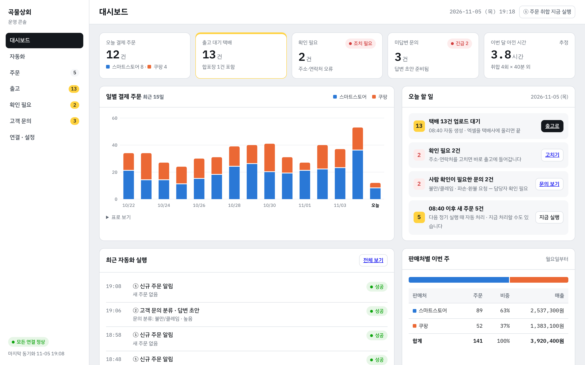
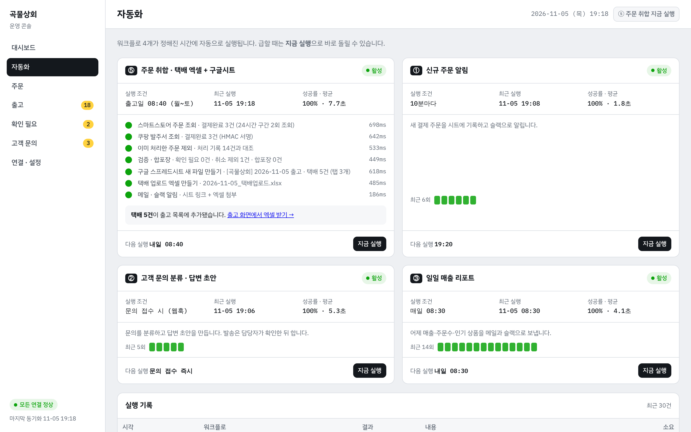
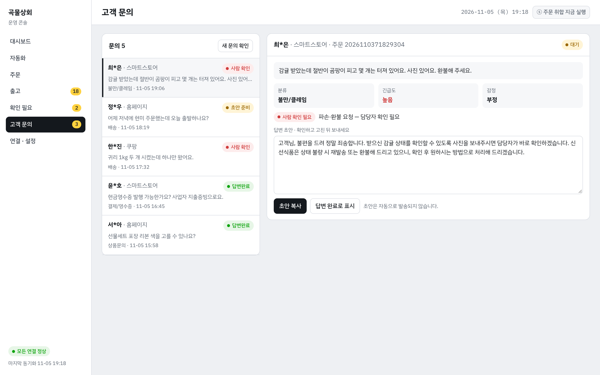

온라인 쇼핑몰 · 운영 콘솔 구축화면 예시 · 샘플 데이터
주문 · 출고 · 문의를 한 화면에서 보는 운영 대시보드
스마트스토어 · 쿠팡 주문과 자동화 실행 결과를 모아, 오늘 처리할 일부터 보여줍니다.
console.곡물상회 / 대시보드

자동화 실행 · n8n 연동화면 예시 · 샘플 데이터
자동화 4개의 실행 상태와 처리 단계를 바로 확인
주문 취합 · 신규 주문 알림 · 문의 분류 · 매출 리포트. 급할 땐 버튼 하나로 즉시 실행합니다.
console.곡물상회 / 자동화

고객 문의 · 답변 초안화면 예시 · 샘플 데이터
문의는 자동 분류, 긴급 건은 먼저, 답변은 초안부터
판매처별 문의를 모아 분류 · 긴급도를 표시하고, 담당자는 초안을 확인한 뒤 보냅니다.
console.곡물상회 / 고객 문의
